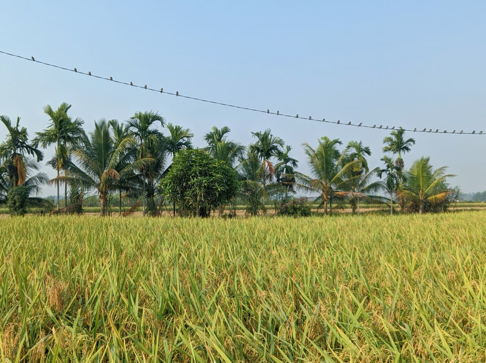

🌾
pertanian.jpg
pertanian.jpg
Pertanian & Persawahan
Hamparan sawah menjadi salah satu bagian yang melekat dengan kehidupan Desa Sepadu. Di antara hijaunya tanaman dan luasnya lahan pertanian, tersimpan aktivitas serta keseharian masyarakat yang terus berjalan dari waktu ke waktu.
Lihat Selengkapnya →